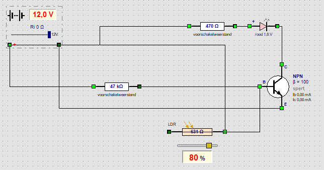

 LDR. Dans le collecteur 470 Ω et une LED
rouge. À 80 % de lumière, la LED reste éteinte.
LDR. Dans le collecteur 470 Ω et une LED
rouge. À 80 % de lumière, la LED reste éteinte.Parcours › Électronique › Leçon 40 sur 42

LDR. Dans le collecteur 470 Ω et une LED
rouge. À 80 % de lumière, la LED reste éteinte.Une LDR est une résistance qui diminue quand elle reçoit plus de lumière. Avec le curseur sous la LDR, vous réglez la lumière ; le petit écran du bas affiche la lumière, le bloc la résistance.
La résistance de 47 kΩ et la LDR forment ensemble un diviseur de tension. La tension sur la base est la part des 12 V aux bornes de la LDR :
Ubase = 12 V × RLDR / (47 kΩ + RLDR)

Où est le point de basculement ? Le transistor commence à conduire quand la base reçoit 0,7 V. Il y a alors 11,3 V aux bornes des 47 kΩ, donc la LDR doit faire 0,7 / 11,3 × 47 kΩ ≈ 2,9 kΩ. C’est le cas vers 63 % de lumière.
Faites un clic droit sur la résistance de 47 kΩ et choisissez Type › résistance série (100 kΩ). Faut-il maintenant qu’il fasse plus ou moins sombre pour que la LED s’allume ?
Plus sombre. Avec 100 kΩ, la LDR doit faire 0,7 / 11,3 × 100 kΩ ≈ 6,2 kΩ pour que la base reçoive 0,7 V. Cela n’arrive qu’en dessous d’environ 55 % de lumière. La résistance fixe règle donc la quantité de lumière à laquelle la lampe s’allume.